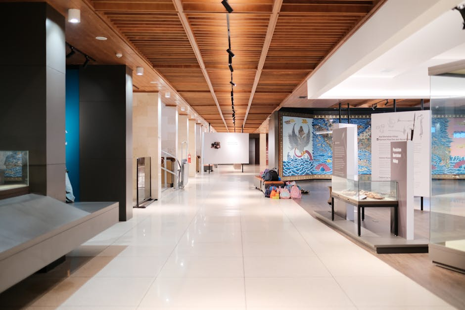
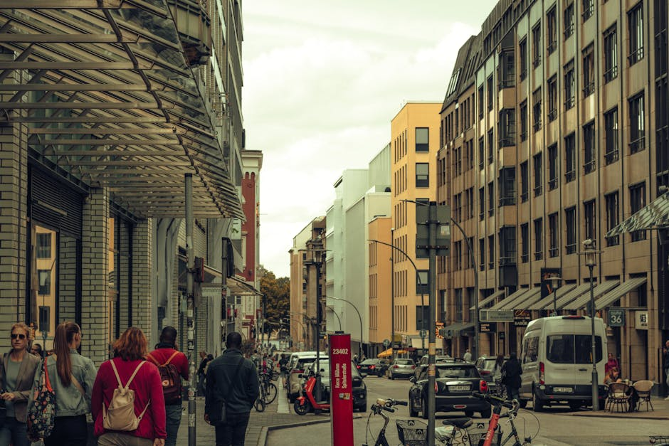

Mettiti in Contatto
Hai suggerimenti, proposte editoriali o semplicemente vuoi condividere il tuo pensiero sulle tematiche trattate? Compila il modulo sottostante per inviarci un messaggio.

La tua bussola editoriale indipendente per orientarti tra arti visive, teatro, letteratura e le dinamiche complesse della società italiana.
Scopri il nostro mondoNonSync Hub nasce come spazio di riflessione e dibattito sul vasto panorama della cultura contemporanea. Il nostro blog cultura e società contemporanea è dedicato a chi cerca prospettive inedite e analisi approfondite su ciò che accade nel mondo delle idee.
Esploriamo le intersezioni tra l'arte, il pensiero e la vita quotidiana, offrendo una lente d'ingrandimento sulla società italiana in continua evoluzione. Dalle nuove correnti letterarie alle espressioni performative più audaci, curiamo contenuti che stimolano il senso critico.
Il nostro obiettivo è decostruire i luoghi comuni e offrire ai nostri lettori strumenti per comprendere la complessità del presente, attraverso articoli ben documentati e recensioni indipendenti.
Approfondimenti mirati sui pilastri della creatività e dell'analisi sociale moderna.
Copertura delle mostre più rilevanti, analisi dei movimenti artistici emergenti e recensioni critiche sulle espressioni visive che plasmano la nostra percezione del mondo.
Riflessioni approfondite sulle opere teatrali e performative. Seguiamo la scena italiana e internazionale per raccontare come il palcoscenico rifletta le urgenze del nostro tempo.
Esplorazione dei testi fondamentali, saggi e nuove voci narrative. Analizziamo come la parola scritta interpreti le trasformazioni della società contemporanea.

"Un blog cultura e società contemporanea che finalmente offre uno sguardo non banale sulle dinamiche del nostro tempo. Le recensioni teatrali sono sempre puntuali e illuminanti."
— Matteo R., 2026
"Leggo NonSync Hub per tenermi aggiornata sulle arti visive. Gli articoli sono curati, scritti con competenza e offrono sempre spunti di riflessione inaspettati."
— Elena C., 2026
"L'approccio alla letteratura e alla società italiana è fresco e rigoroso al tempo stesso. Un punto di riferimento per chi cerca contenuti di spessore sul web."
— Lorenzo B., 2026
Scopri di più sul nostro approccio alla cultura contemporanea e su come selezioniamo i contenuti.

Ci concentriamo principalmente su arti visive, teatro, letteratura e l'analisi approfondita della società italiana. Esploriamo le nuove tendenze e le opere che riflettono le complessità del nostro tempo.
Aggiorniamo il nostro blog settimanalmente per garantire contenuti di alta qualità e ben documentati. Preferiamo la profondità di analisi alla quantità, selezionando con cura gli argomenti da trattare.
Siamo sempre interessati a scoprire nuove voci e prospettive. Puoi utilizzare il modulo di contatto per inviarci proposte editoriali o segnalare eventi rilevanti nell'ambito della cultura contemporanea.
Scegliamo testi che offrono una chiave di lettura originale sulle dinamiche sociali attuali. Spaziamo dai saggi critici alla narrativa emergente, privilegiando autori che stimolano il dibattito e la riflessione.
Analizziamo i cambiamenti sociali attraverso la lente delle produzioni culturali. Crediamo che l'arte, il teatro e la letteratura siano sismografi eccellenti per comprendere le tensioni, le evoluzioni e le speranze della società in cui viviamo.
Hai suggerimenti, proposte editoriali o semplicemente vuoi condividere il tuo pensiero sulle tematiche trattate? Compila il modulo sottostante per inviarci un messaggio.